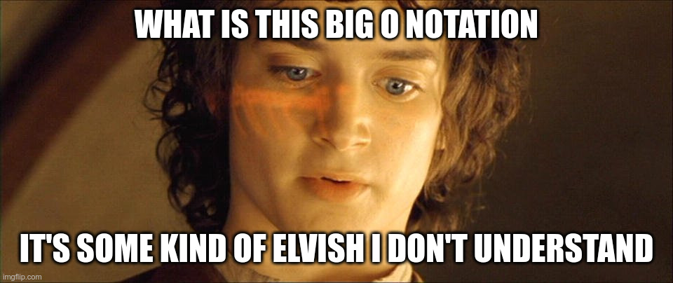

Class #02 · Sublinear complexity data structures
map, set, priority_queue, and how fast is fast enough.
Main learning outcomes for this class
Big O notation
- I understand the basic meaning of Big O Notation
- I know how to estimate the complexity of simple programs and how to use it to estimate if my program will not obtain time limit exceeded when submitted
Fundamental data structures
- I know the concept of stacks, queues and deques and how to use them on my programming language
- I know the concept of sets (set and multiset) and how to use them on my programming language
- I know the concept of maps/dictionaries (map and multimap) and how to use them on my programming language
- I know the concept of priority queues (priority_queue) and how to use them on my programming language
- I understand the concept of ordered data structures and how to traverse them using iterators
- I know that there are non ordered data structures for the fundamental data structures (ex: unordered_set and unordered_map)
- I know that there are policy based data structures as a GNU extension that provide two additional operations in O(log n): order_of_key and find_by_order
Fast I/O
- I understand that some problems might require a lot of input and/or output and therefore need efficient I/O primitives
- I know how to perform fast IO on my preferred language
Study material
Big O notation
- How fast is fast? Order of magnitude analysisBruce Merry · brief introduction to big-oh notation
- Big O notationWikipedia
- Slides from my Design and Analysis of Algorithms classPedro Ribeiro PT · video lectures · similar slides in English, for my Algorithms class
- Doing the math with big O: cheat sheetPedro Ribeiro
- Competitive Programmer's HandbookChapter 2
Programming language references
- cppreference.comC++ · also cplusplus.com and devdocs.io
- Oracle: Java 17 APIJava
Fundamental data structures
- cppreference containers librarycppreference
- The C++ Standard Template Library (STL)GeeksforGeeks · examples in C++ for all native data structures discussed in this class
- Java Collection TutorialGeeksforGeeks · examples in Java for all native data structures discussed in this class · version 2
- Slides from my Algorithms and Data Structures classPedro Ribeiro · balanced binary search trees · visualization of red-black trees
- PBDS @ GNUAlso Ordered Set and GNU C++ PBDS (GeeksforGeeks), C++ STL: PBDS (CodeForces) and PBDS (Ansh Gupta @ Medium)
- Competitive ProgrammingSections 2.1 and 2.2
- Competitive Programmer's HandbookChapter 4
Fast I/O
- Fast Reading and Printing for C, C++ and JavaPedro Ribeiro PT · FastScanner and FastPrint are available at Mooshak, no need to include their code
- Fast Input & OutputUSACO · C++ and Java
- Fast I/O for Competitive Programming in PythonGeeksforGeeks
See it step by step
How fast do the usual complexities grow? Move n from 1 to 16 and compare. With about 108 simple operations per second, n² is fine for n = 104 but 2ⁿ is already too slow for n = 40.
For n = 16: n < n log n < n² < n³ < 2ⁿ. 2ⁿ overtakes n² at n = 5 and n³ at n = 10.
(some) Training problems
Training problems
- Cool Sequences
PC004Hint
Simple usage of map to keep frequency.
- Concert Tickets
PC010Hint
multiset + upper_bound + erase.
- Remove Duplicates
978AHint
Use a set of integers to know which elements already exist.
- Lecture
499BHint
Use map to associate words with their translation.
I want my memes!
😁 big O notation

😁 the role of containers...

😁 data structures!